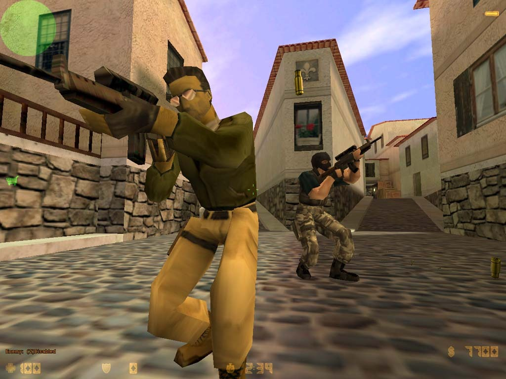

Counter-Striken matka Half-Life modista omaksi peliksi

Counter-Strike on alunperin Half-Life pelimoottorille kehitetty modifikaatio,joka julkaistiin vuonna 1999. Modifikaation kehitti Minh Le ja Jess Cliffe, ja se sai nopeasti suosiota pelaajien keskuudessa.
Vuonna 2000 Valve Corporation osti Counter-Striken oikeudet ja alkoi kehittää siitä itsenäistä peliä. Vuonna 2003 julkaistiin Counter-Strike: Condition Zero, joka oli ensimmäinen virallinen jatko-osa alkuperäiselle Counter-Strikelle.
Vuonna 2004 julkaistiin Counter-Strike: Source, joka käytti Source-pelimoottoria ja tarjosi parannettua grafiikkaa ja pelattavuutta. Vuonna 2012 julkaistiin Counter-Strike: Global Offensive, joka oli suosituin versio pelisarjasta ja jota pelataan laajasti e-urheilukilpailuissa ympäri maailmaa.
Vuonna 2023 julkaistiin Counter-Strike 2, joka on päivitetty versio Global Offensivesta ja tarjoaa parannettua grafiikkaa, uusia karttoja ja pelattavuutta.
Counter-Strike on ollut merkittävä osa pelikulttuuria ja e-urheilua,
ja se on vaikuttanut moniin muihin peleihin ja pelisarjoihin. Pelin suosio on kestänyt yli
20 vuotta, ja se on edelleen yksi suosituimmista ja pelatuimmista peleistä maailmassa.
Counter-Striken historia on täynnä innovaatioita, kilpailuja ja yhteisön tukea, ja se on
jättänyt pysyvän jäljen pelimaailmaan.